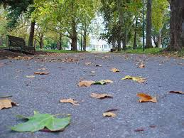
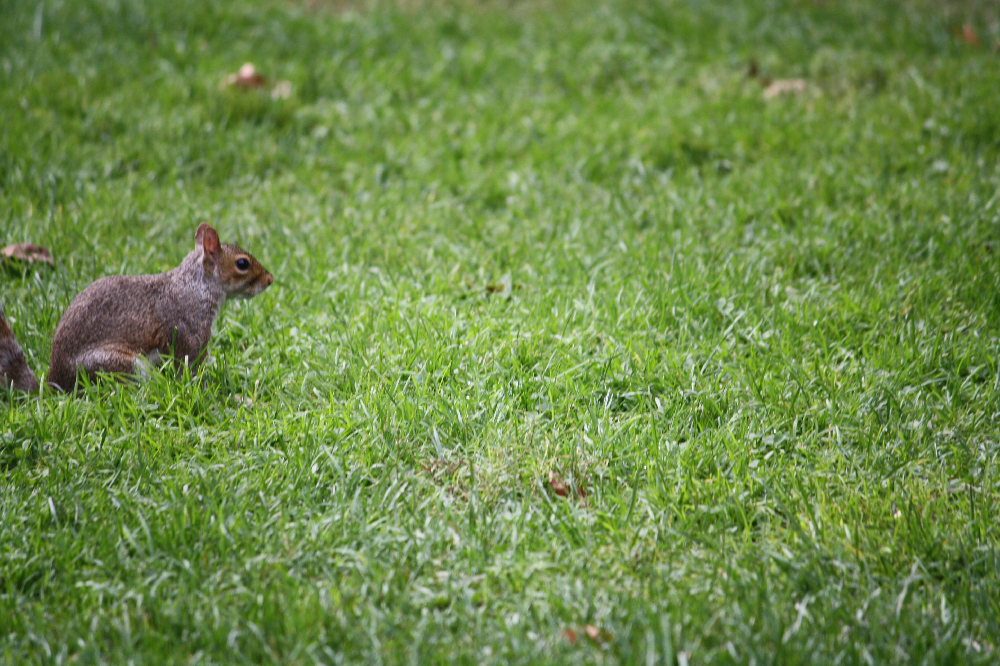
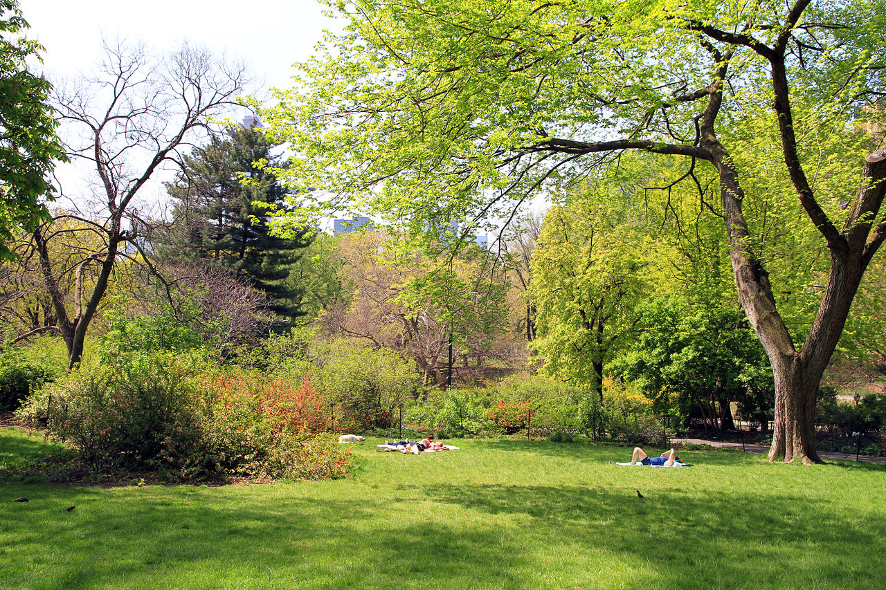

Manhattan/Central Park
On July 21, 1853, the New York State Legislature enacted into law the setting aside of more than 750 acres of land central to Manhattan Island to create America's first major landscaped public park; they would soon refer to it as "the Central Park." Frederick Law Olmsted and Calvert Vaux, the winners of the 1858 design competition for Central Park, along with other socially conscious reformers understood that the creation of a great public park would improve public health and contribute greatly to the formation of a civil society. Immediately, the success of Central Park fostered the urban park movement, one of the great hallmarks of democracy of nineteenth century America.By the early twentieth century, vicissitudes of the social, political and economic climate threatened the fabric of the Park and caused its first serious decline. Robert Moses, park commissioner from 1934 to 1960, received federal funding for the restoration of many eroded landscapes and crumbling structures, and embarked on massive public programming for the post-Depression populace. When he left office, however, there was no management strategy for maintaining those improvements or educating Park visitors in proper stewardship, and for the next two decades the second — and most devastating— decline took its toll on the fragile 843-acre Park.
Physically the Park was in a chronic state of decay. Meadows had become barren dustbowls; benches, lights, and playground equipment were broken, and the one-hundred-year-old infrastructure was crumbling. Socially, the Park bred a careless, even abusive attitude towards the Park evidenced by unchecked amounts of garbage, graffiti, and vandalism. Positive use had increasingly been displaced by illicit and illegal activity. The perception — and in many cases, the reality— of Central Park was of a lawless and dangerous ruin. Despite a workforce of over three hundred Parks Department employees assigned to Central Park, there was no accountability. New York City had abdicated their responsibility as Park stewards and, as a result, this national treasure became a national disgrace.
To help remedy this troubled situation, George Soros and Richard Gilder, under the aegis of the Central Park Community Fund, underwrote a management study of Central Park in 1974 by E.S. Savas, who was at that time the Columbia University School of Business, Professor of Public Systems Management. The groundbreaking study proposed that two important initiatives be implemented to ameliorate the conditions in Central Park: one, that a Chief Executive Officer be given "clear and unambiguous managerial authority" for all Park operations, and two, a Central Park Board of Guardians be created to oversee strategic planning and policy, thereby instituting private citizen involvement in their public park.

|  | |
 |
 |  |  |
The study's first proposal resulted in the appointment in 1979 of Elizabeth "Betsy" Barlow (now Rogers), a Yale-educated urban planner and writer, who became the newly created Central Park administrator, charged with overseeing all aspects of the Park's daily operations, in essence the Chief Executive Officer recommended in the Savas study. For four years before her appointment, Betsy had been overseeing the Central Park Task Force's program for summer youth interns, eventually becoming the head of that small, private organization, financially separate from the City but existing under the aegis of the Parks Department.
Given her new official status and responsibilities as administrator, Betsy first conceived of and then helped to create a revolutionary public/private partnership with the support of then park commissioner Gordon Davis that would bring private monies and expertise in partnership with the City of New York to manage and restore Central Park. In 1980, the two most prominent private advocacy groups — the Central Park Task Force and the Central Park Community Fund — merged to become the Central Park Conservancy — the citizen-based Board of Guardians that the Savas study had essentially recommended.
Under a Conservancy-funded master plan, the gradual restoration of those decrepit landscapes evolved, and success bred success. As the Conservancy showed its ability to protect and maintain its investment, many more private individuals, foundations and corporations put their trust and their money into the restoration of the Park. To date, the Conservancy has had three successful capital campaigns towards rebuilding Central Park. The first campaign was launched in 1987; the second, "The Wonder of New York Campaign," was launched when Richard Gilder made a challenge grant to the Conservancy and the City in 1993. The work was continued in the "Campaign for Central Park," which ended in 2008, ensuring the completion of the Park's transformation. Most importantly, for the first time in the Park's turbulent history, the Conservancy has created an endowment that will ensure a sustainable green and healthy future for Central Park.
The Park's restorations gradually fostered important social changes in public behavior that returned the sanctity of public space to Central Park and ultimately to New York City at large. The American ideal of a great public park and its importance as a place to model and shape public behavior and enhance the quality of life for all its citizens once again defines the measurement of a great municipality. Towards this goal, the Conservancy was first in its demonstration of zero tolerance for both garbage and graffiti. An immediate call to action came when even the slightest sign of vandalism appeared in the Park — a busted lamppost or broken bench, for example— and became the tipping point, that turned public opinion of Central Park from one of dire repulsion to one of deep respect.
Today Central Park has never been more beautiful or better managed in the Park's 156-year history, and the Conservancy is proud to be the leader of the Park's longest period of sustained health and beauty. To date the Conservancy has raised $700million towards the restoration, programming and management of Central Park and is responsible for 75 percent of this year's annual operating budget of $58.3million. Furthermore, just as Central Park was the leader in the birth of urban parks, so today Central Park, through the Conservancy's innovative care and expertise, is the leader in the rebirth of urban parks, public spaces and the quality of life movement. City officials and park professionals from across America and around the world come to the Central Park Conservancy Institute for Urban Parks to learn of its best practices to restore and manage their local parks.
| Social Media |


|
| Copyright Charusmita |